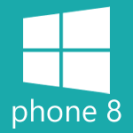
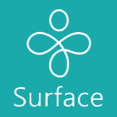
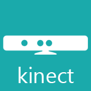

Technology has always been a big part of my life, right from my younger years when I was building my neighbours PC’s using the newest Pentium processors to learning the latest and greatest (and sometimes bleeding edge) client technologies of today and tomorrow.
I am primarily a C# developer and focus on XAML based technologies and XNA with the Windows, Windows Phone and Surface platforms with the use of Kinect.
More recently, I have branched out onto the web and have learnt a thing or two about HTML5, CSS3 and JavaScript.
- 
- 
- 